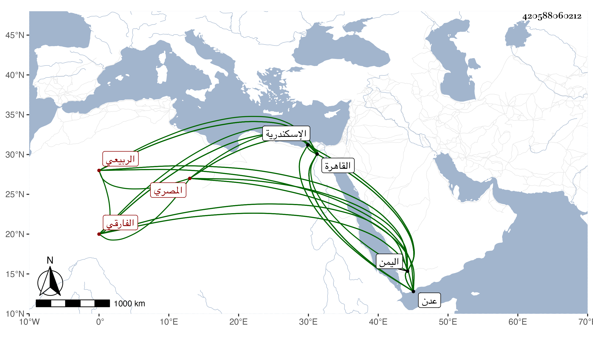

0902Sakhawi.DawLamic.ITO20230111-ara1.EIS1600.420588060212
Biography ID: 420588060212
543
عبد العزيز بن أحمد بن علي بن يحيى بن أبي بكر بن أبي السعادات ابن زكريا بن يحيى بن أحمد الربيعي نسبة لربيعة الفرس بالفاء والراء الفارقي الأصل نسبة لميافارقين بديار بكر المصري . ولد بعد سنة ثمانين وسبعمائة تقريبا وسافر به أبوه وله نحو عشر سنين إلى اليمن فاستوطنها إلى سنة ثلاث وعشرين غير أنه قدم القاهرة في سنة سبع وثمانمائة لبعض الأشغال وحظى في اليمن عند الأشرف إسماعيل بن الأفضل العباس بحيث كان ينتقل معه حيث ما سكن لتعز وغيرها وكذا كان أبوه في خدمته بل كان عمه وزيره ولما قدم القاهرة في سنة ثلاث وعشرين كانت إقامته إما بها أو باسكندرية أو بغيرهما من نواحيها حتى مات في يوم الجمعة سابع عشري جمادى الأولى سنة ثمان وستين ، وذكر البقاعي أنه لقيه بالقاهرة وحكى له أن عادة أهل عدن أن من كان حمله من التجار أكثر بدىء بوزنه فاتفق اجتماع جماعة وفيهم خصى يقال له يمن عتيق الشجاعي وكان حمله أكثر ونور الدين الفوي أحد التجار المقيمين بعدن ممن له وجاهة عندهم وتقدم في السن فأرادوا تقديمه فلم يمكنهم الخصى من ذلك وسألهم الجري على العادة أو يكاتب السلطان ويمتثل ما يرسم به فكاتبوه فكتب إليهم :
| يمن يمن بمن | يمن يمن يمن يمن |
ولم ينقط حرفا منها فلم يفهم أحد من المباشرين مراده وفهمه الخصى فكتب إلى السلطان كتابا ووضع فيه هذه الكلمات بعينها ولم ينقط أيضا شيئا ففهم السلطان أن مراده
| يمن يمن بمن | تمن يمن ثمن ثمن |
فأرسل إليهم أن قدموه وأراد شراءه فوجده عتيقا ، وكذا كتب عنه البقاعي ما أنشده إياه من نظم الأشرف .
